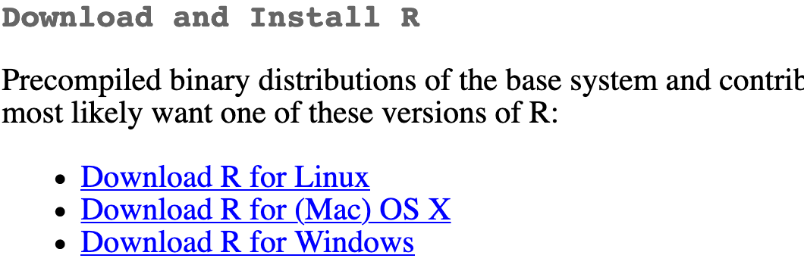
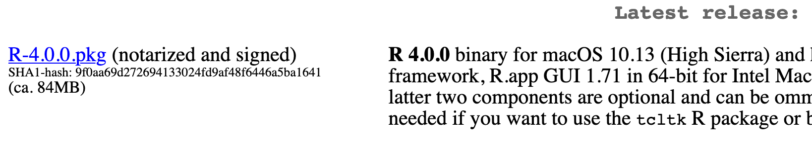
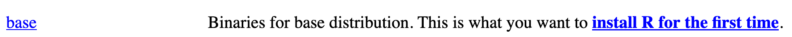
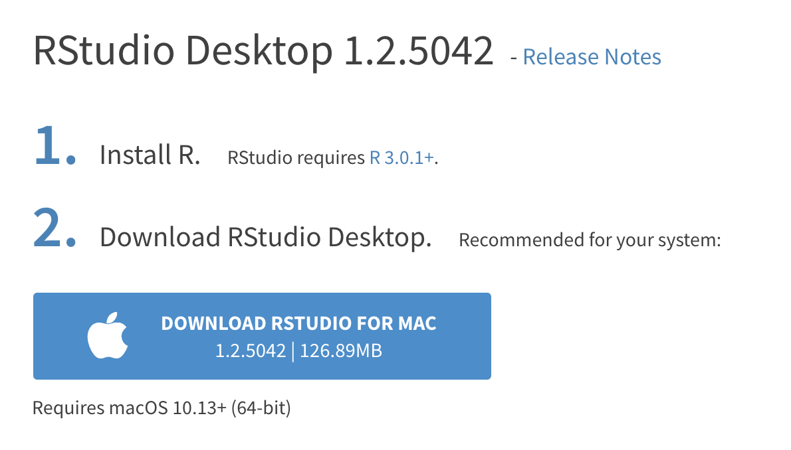
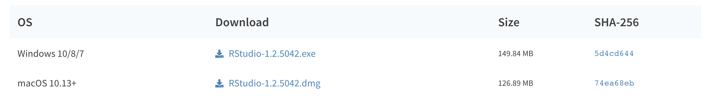
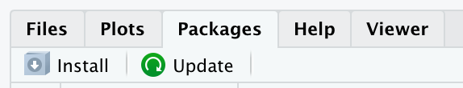
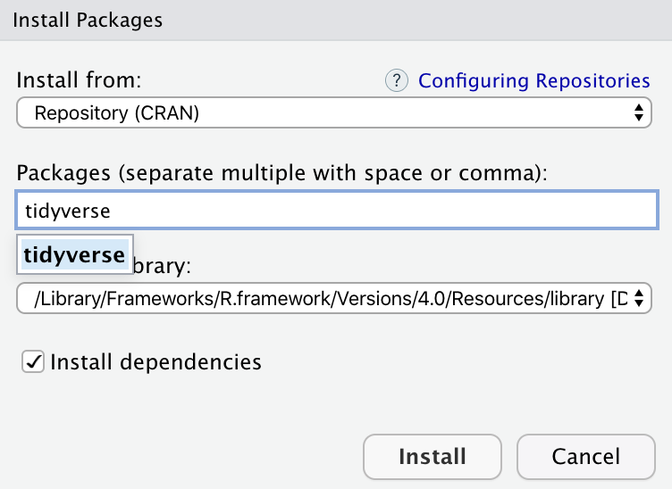

Installing R, RStudio, tidyverse, and tinytex
You will do all of your work in this class with the open source (and free!) programming language R. You will use RStudio as the main program to access R. Think of R as an engine and RStudio as a car dashboard—R handles all the calculations and the actual statistics, while RStudio provides a nice interface for running R code.
Posit.cloud
R is free, but it can sometimes be a pain to install and configure. To make life easier, you can (and should!) use the free Posit.cloud service initially, which lets you run a full instance of RStudio in your web browser. This means you won’t have to install anything on your computer to get started with R! We will have a shared class workspace in Posit.cloud that will let you quickly copy templates for assignments.
Go to https://posit.cloud/ and create an account. You’ll receive a link to join the shared class workspace separately. If you don’t get this link, let me know and I will invite you.
RStudio on your computer
Posit.cloud is convenient, but it can be slow and it is not designed to be able to handle larger datasets, more complicated analysis, or fancier graphics. Over the course of the semester, you should wean yourself off of Posit.cloud and install all these things locally. This is also important if you want to customize fonts, since Posit.cloud has extremely limited support for fonts other than Helvetica.
Here’s how you install all these things
Install R
First you need to install R itself (the engine).
Go to the CRAN (Collective R Archive Network) website: https://cran.r-project.org/
Click on “Download R for
XXX”, whereXXXis either Mac or Windows:If you use macOS, scroll down to the first
.pkgfile in the list of files (in this picture, it’sR-4.0.0.pkg; as of right now, the current version is 4.4.0) and download it.
If you use Windows, click “base” (or click on the bolded “install R for the first time” link) and download it.

Double click on the downloaded file (check your
Downloadsfolder). Click yes through all the prompts to install like any other program.If you use macOS, download and install XQuartz. You do not need to do this on Windows.
Install RStudio
Next, you need to install RStudio, the nicer graphical user interface (GUI) for R (the dashboard). Once R and RStudio are both installed, you can ignore R and only use RStudio. RStudio will use R automatically and you won’t ever have to interact with it directly.
Go to the free download location on RStudio’s website: https://www.rstudio.com/products/rstudio/download/#download
The website should automatically detect your operating system (macOS or Windows) and show a big download button for it:

If not, scroll down a little to the large table and choose the version of RStudio that matches your operating system.

Double click on the downloaded file (again, check your
Downloadsfolder). Click yes through all the prompts to install like any other program.
Double click on RStudio to run it (check your applications folder or start menu).
Install tidyverse
R packages are easy to install with RStudio. Select the packages panel, click on “Install,” type the name of the package you want to install, and press enter.

This can sometimes be tedious when you’re installing lots of packages, though. The tidyverse, for instance, consists of dozens of packages (including {ggplot2}) that all work together. Rather than install each individually, you can install a single magical package and get them all at the same time.
Go to the packages panel in RStudio, click on “Install,” type “tidyverse”, and press enter. You’ll see a bunch of output in the RStudio console as all the tidyverse packages are installed.

Notice also that RStudio will generate a line of code for you and run it: install.packages("tidyverse"). You can also just paste and run this instead of using the packages panel.
Install TinyTeX
When you render to PDF, R uses a special scientific typesetting program named LaTeX (pronounced “lay-tek” or “lah-tex”; for goofy nerdy reasons, the x is technically the “ch” sound in “Bach”, but most people just say it as “k”—saying “layteks” is frowned on for whatever reason).
LaTeX is neat and makes pretty documents, but it’s a huge program—the macOS version, for instance, is nearly 4 GB! To make life easier, there’s a smaller version named TinyTeX that automatically deals with differences between macOS and Windows and automatically installs any missing LaTeX packages as needed.
Here’s how to install TinyTeX so you can create pretty PDFs:
Open the Terminal panel in RStudio (down in the bottom left corner where the Console panel is; there’s a tab named “Terminal” there)
Type this:
quarto install tinytex